263-5210: Probabilistic Artificial Intelligence
A collection of practical projects that deal with Bayesian machine learning models from Gaussian Processes to Bayesian Neural Networks. Working under uncertainty, reducing uncertainty, and using uncertainty in predictions provide valuable input for decision making.
This course introduces core modeling techniques and algorithms from machine learning, optimization and control for reasoning and decision making under uncertainty, and study applications in areas such as robotics and the Internet.
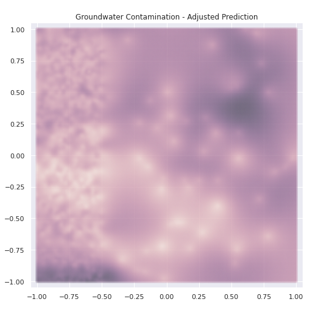
227-0447: Image Analysis and Computer Vision
Sets of optional exercises that utilize key computer vision algorithms and are applied for custom image analyses.
Light and perception. Digital image formation. Image enhancement and feature extraction. Unitary transformations. Color and texture. Image segmentation. Motion extraction and tracking. 3D data extraction. Invariant features. Specific object recognition and object class recognition. Deep learning and Convolutional Neural Networks.
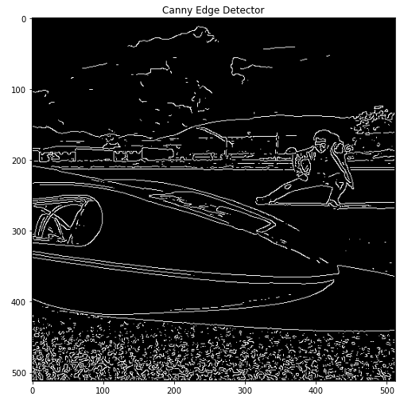
151-0563: Dynamic Programming & Optimal Control
An exploration of dynamic programming for optimal control through solving the Bellman Equation. The use of value iteration, policy iteration, and linear programming are explored in a stochastic probabilistic system.
Dynamic Programming Algorithm; Deterministic Systems and Shortest Path Problems; Infinite Horizon Problems, Bellman Equation; Deterministic Continuous-Time Optimal Control.
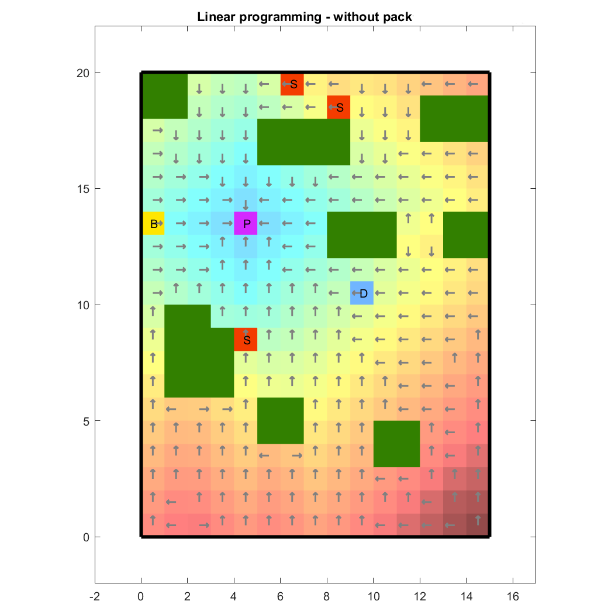
263-5210
Reinforcement Learning
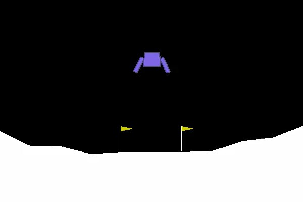
Using Gaussian processes to model an accuracy-speed problem and determining the optimal hyperparameters
Probabilistic Artificial Intelligence Project #4
reinforcement learning deep learning actor-critic
In this project, we look at an actor-critic implementation of reinforcement learning operating on the OpenAI Lunar Lander game. Reinforcement learning relies on two neural networks that act as an "actor" or policy function generator, and a "critic" or value function generator. In the figure below, we see how an untrained model performs inaccomplishing the objective of landing between the two flags at a slow enough speed to not crash.
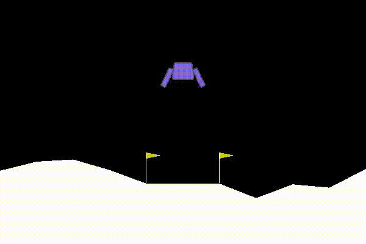
Untrained deep reinforcement learning policy in the Lunar Lander game
To improve this performance, we attach certain costs and rewards to train the "critic" network. Here, we slowly learn the value of each state and, in a Q-learning implementation, the associated value of each action. In this case, a successful landing will get a positive bonus, whereas any action (left, right, up) will subtract a cost to the value. Once this value function is in place, a policy can be optimized using gradient descent on the log loss of the temporal difference to move towards a better performing policy. The figure below shows a relatively successfully trained model after 66 epochs of training.
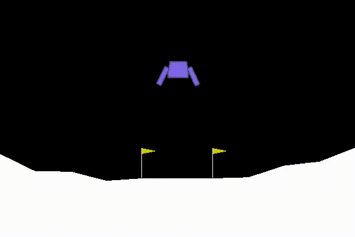
Trained deep reinforcement learning policy in the Lunar Lander game
Reinforcement learning is incredibly powerful, but there were a few issues that were present while working on this project. One of the major issues is in the volatile nature or noisy learning process. Certain methods to address these issues, like reducing the learning rate, have some potential risk in falling into local optima. Using a temporal difference (TD) with a discounting factor and standardization of the TD help reduce the noise and achieve less volatile learning of the optimal policy.
Active Learning
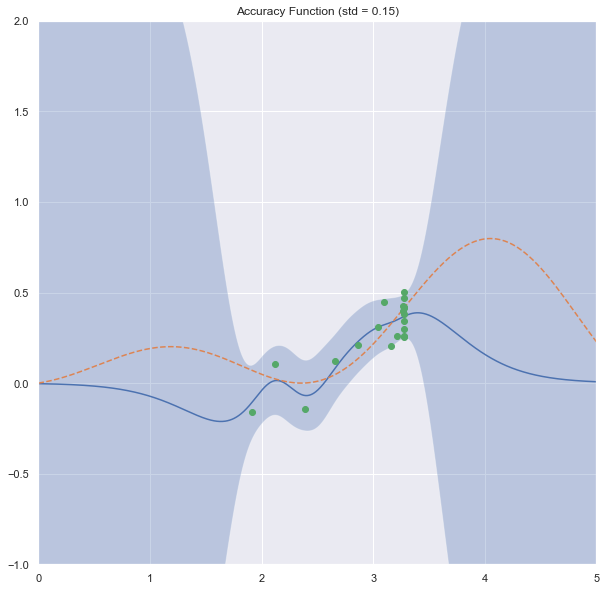
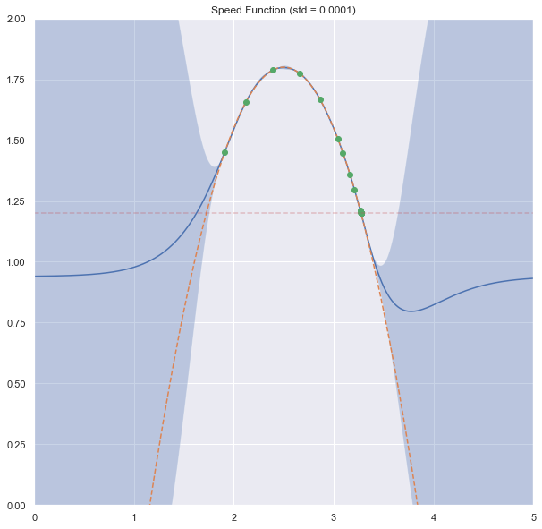
Using Gaussian processes to model an accuracy-speed problem and determining the optimal hyperparameters
Probabilistic Artificial Intelligence Project #3
active learning exploration / exploitation gaussian processes
In this project, we are exploring how active learning can be leveraged to approximate and determine the maximal location to explore or exploit. In the illustrative example, We have some kind of model with hyperparameters. There is a function f(θ) which maps the hyperparameters to an accuracy of the model. There is also a function v(θ) that maps the hyperparameters to the speed of the model. The accuracy should be maximized, whereas there is some minimum speed requirements we need to exceed. We don't know what either of these functions are, but we do know that the accuracy function is quite noisy, while the speed function is quite precise.
Modelling the Functions
To model the functions, We can return once again to the Gaussian Process, which can allow us to do a function approximate across the given hyperparameter domain. My goal, then, is to figure out where to query to determine the optimal place to sample to gain the most information on possible maxima.
Exploiting Uncertainty
Given a limited number of optimizations, we can use the standard deviation outputs of the Gaussian processes to look for areas where the maximal upper confidence bound is above our current predicted lower confidence bound. This method allows us to quickly discard areas that are not promising and focus our queries on areas that are promising. The images in the figure above show how we can converge on a optimal hyperparameters to maximize accuracy, while fulfilling a speed requirement of 1.2.
As shown in the figure above, the process quickly identifies the maximum return of the left function given that the right function must be above a certain threshold. The subsequent or later queries typically concentrate near the viable maxima where it tries to reduce uncertainty through extensive querying.
Bayesian Deep Learning on Rotated MNIST
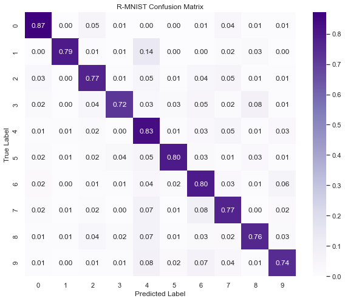
Confusion matrix on the validation set where 30% of images are rotated
Probabilistic Artificial Intelligence Project #2
bayesian deep learning nn calibration pytorch
One of the significant advantages of Bayesian deep learning is its ability to better quantify uncertainty. Treating each node of the neural network as a normal distribution with some mean and standard deviation allows us to capture a broader image and can help prevent some issues of overfitting. A very specific metric that can be used is the expected calibration error as discussed by Guo et al., 2017: $$\hat{\text{ECE}} = \sum_{m=1}^M \frac{|B_m|}{n} | acc(B_m) - conf(B_m) |$$ Essentially, a well-calibrated NN should have similar accuracy to the confidence of its prediction.
Bayesian Neural Network (BNN)
In this project we looked to create a simple dense feedforward NN that has a normal distribution at each node as opposed to a singular value. The primary tool involved in optimization is variational inference where we model the true distribution as a Gaussian. We then utilize the Evidence Lower BOund (ELBO), which is a combination of cross-entropy loss and Kullback-Leibler divergence, to optimize the loss.
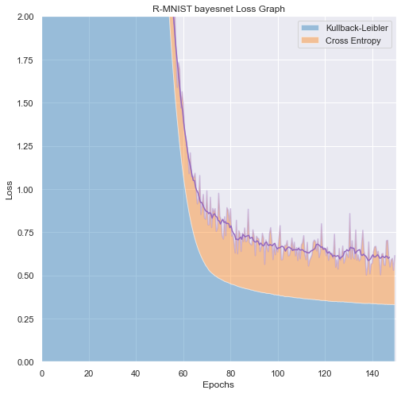
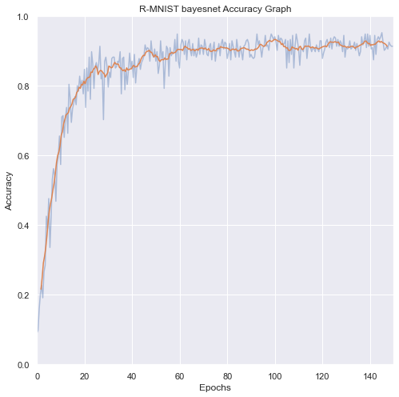
Loss and accuracy throughout 100 epochs of training
The validation set for this, however, is slightly modified. 30% of the validation set (10,000 of the MNIST dataset) is randomly rotated orthogonally. This means that 30% of the images being tested act as out-of-sample test sets. This results in interesting results when we look at which images the BNN is most confident and least confident with.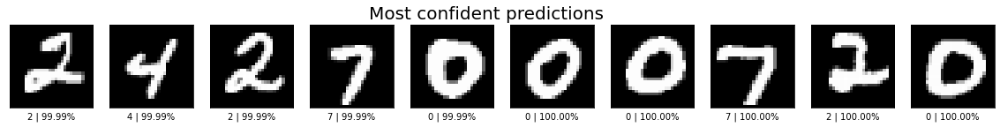
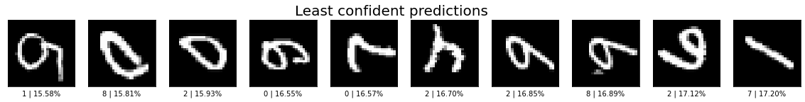
Sample of most and least confident predictions
Comparing the BNN to a dense NN implementation, we see a very interesting result in the confidence:
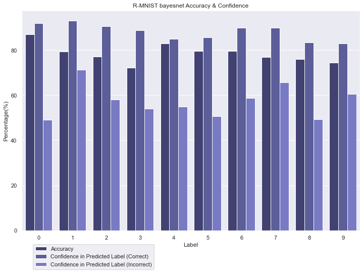
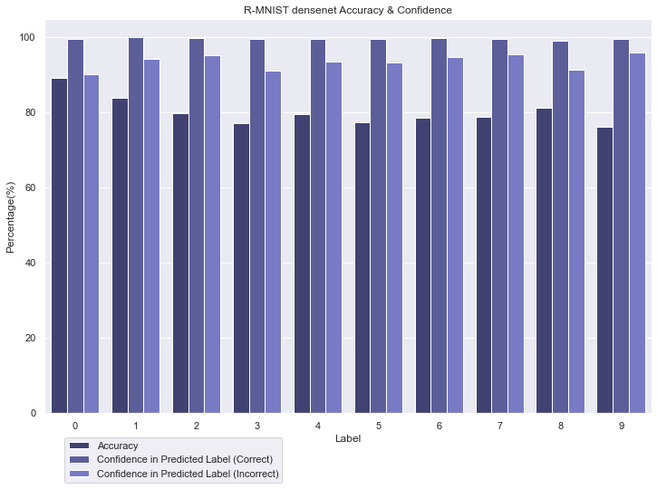
Accuracy compared against confidence when correct and incorrect for BNN and DNN
The BNN tends to be much more uncertain when it's incorrect compared the DNN which overestimates its confidence by quite a significant margin. Even when the DNN is incorrect, it still believes it is correct with typically >90% confidence. This is one potential advantage of using BNNs where quantifying and having accurate uncertainty is necessary. The performance of the two NNs are summarized below. (Accuracy should be high, while ECE should be minimized)
Model type: bayesnet
Accuracy: 0.776
ECE: 0.040
Model type: densenet
Accuracy: 0.791
ECE: 0.193
Gaussian Processes for Groundwater Contamination Prediction
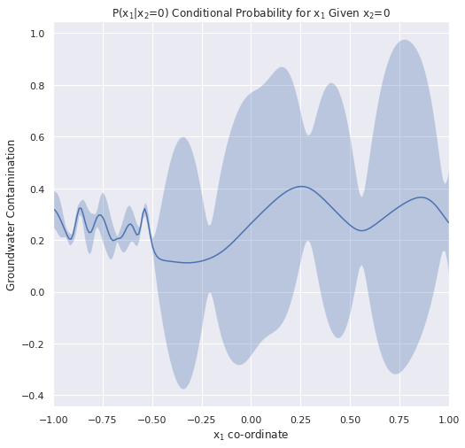
Conditional probability bounded by one standard deviation
Probabilistic Artificial Intelligence Project #1
gaussian processes asymmetric costs kernel approximations
Task Motivation
According to the United Nations, one in three people worldwide do not have access to safe drinking water. Unsafe water is a leading risk factor for death, especially at low incomes, and is one of the world's largest health and environmental problems. Groundwater pollution occurs when pollutants are released into the ground and make their way down into groundwater. While water contamination can occur from naturally occurring contaminants, such as arsenic or fluoride, common causes of water pollution are on-site sanitation systems, effluent from wastewater treatment plants, petrol filling stations or agricultural fertilizers.
In order to prevent outbreaks and incidents of water poisonings, detecting ground-water contamination is crucial. Geostatistics has often utilized the Gaussian Process (GP) to model the spatial pattern of pollutant concentrations in the ground. Usually, a data point in 2D represents a geological well where a sample was taken from a bore hole to measure concentration of pollutants.
The Gaussian Process
Gaussian models are especially useful in these applications as they, by nature, incorporate uncertainty into their models allowing for more aggressive or conservative manipulation of the predictions. Following the successful completion of this project, I wanted to visualize what the Gaussian process output provides visually in terms of estimation and prediction. I'll walk through some of the key challenges in developing my solution. But first, let's visualize what the training data set looks like. I'll be utilizing a 2D scatter plot with differing hues related to concentration of contaminants. For reference, the cut-off threshold for water drinking safety is 0.5.
The first major obstacle in developing our Gaussian model is building our covariance matrix, or kernel matrix. The provided training set has 17250 data points and the resulting covariance matrix would result in a 17250-by-17250 (n-by-n) matrix. With calculations growing at an n-squared rate, the creation of a sparse representation becomes extremely useful. To create a smaller m-by-m kernel, where m << n, we want to capture key qualities of the dataset. To choose these inducing points, we add co-ordinates of local extrema and values around the safety threshold. From the above figure, we also notice a sparse region and ensure those points are added to our set of inducing points.
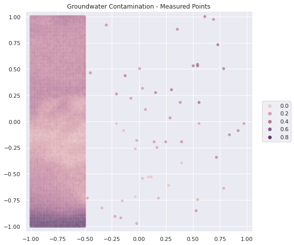
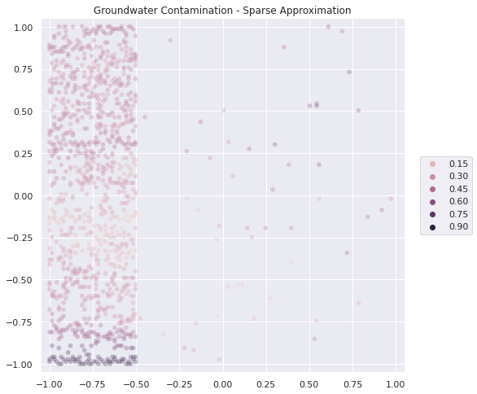
Original and sparse selection of training data for groundwater contamination
Once you have your set of inducing points, you have to next select a kernel. RBF (radial basis function) is one of the most common, but we found that the Matern-1.5 kernel worked best for us. Let's see what those predictions (the Gaussian means) showcase.
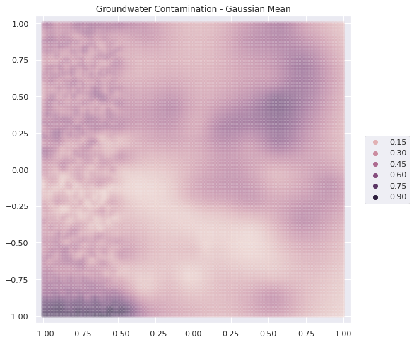
Gaussian mean prediction of contaminated groundwater
However, the Gaussian mean may not be the best classifier. Provided to us was an asymmetric cost function which punished underestimation of contamination more severely than overestimation. This penalty is further multiplied if you are above the safety threshold. The Gaussian process regression has a way to tackle this, however. We can also sample the standard deviation at any point we have selected, which encodes a degree of uncertainty in the prediction.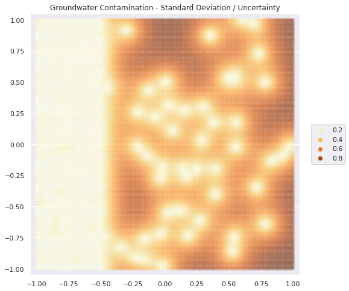
Standard deviation of the resulting predictions and conservative adjustment
This standard deviation can then be used to make our predictions more conservative, adding a small buffer where the classifiers is confident and a large buffer where the classifier is not. This will allow for an accurate, yet conservative, estimator wherever uncertainty is high.
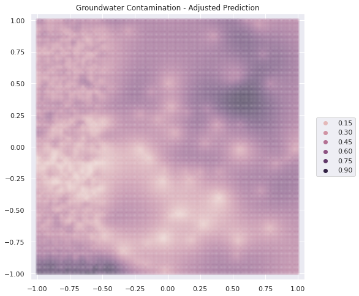
Adjusted prediction after factoring in uncertainty
227-0447
Image Classification: BoW vs. CNN
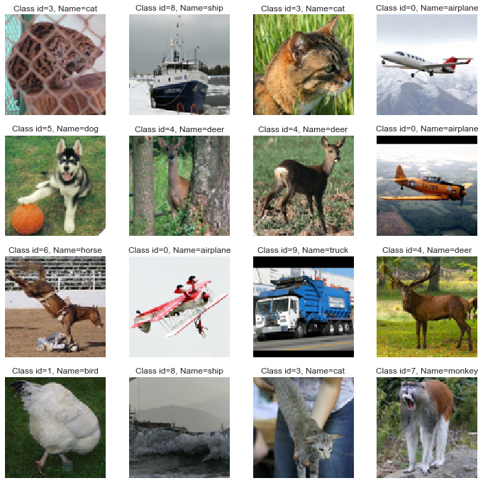
Examples of the images from the STL-10 image classiication database
Image Analysis and Computer Vision Exercise #3
classification CNN k-means HOG BoW
Image classification technology has rapidly been transformed within the last decade with the rise of more sophisticated deep learning and neural network architectures. Classification is a critical aspect of computer vision in identifying and localizaing objects, especially in the field of robotics.
While convolutional neural networks (CNNs) have become the state-of-the-art, the previous methods relied on bag-of-words (BoW) implementations that have also been shown to produce good results. The BoWs classifications is trained on the histogram of orientated gradients (HOG) and classified using K-means clustering. An L2 or euclidian distance of the test image to the training centroids identifies the associated class.
As shown in the examples above, we are the using the STL-10 image set from Stanford AI that has a limited number of images for training / testing compared to other image sets. The higher resolution at 96x96 compared to CIFAR-10 also makes it more difficult to classify.
The first task in this exercise was to create a BoW classifier which required creating an 8-bin histogram of gradients on a 4x4 cell of 4x4 pixels (total 16x16 px). In the end, each patch in the image creates a 128-dimensional feature vector (8 direction for each of the 16 cells). A K-means algorithm is applied to the training set to determine suitable k centroid locations (k=100 in this case) as the codebook using an L2 norm. Another histogram is created by binning each feature (128-dimensional array) to its closest centroid in the codebook (100-dimensional). Finally, an L2 nearest neighbour is used on a test image to find the closest training image based on the codebook histogram and given the same label. Below shows the results of a 2-class and a 10 class representation.
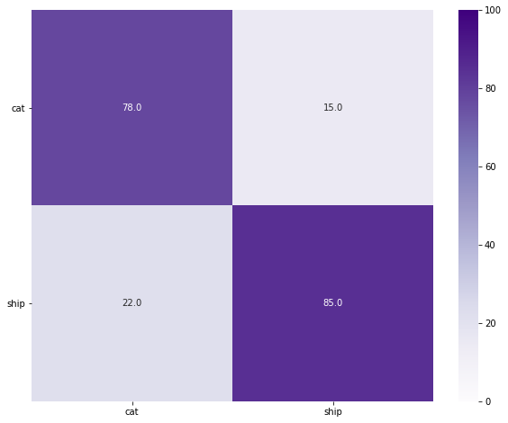
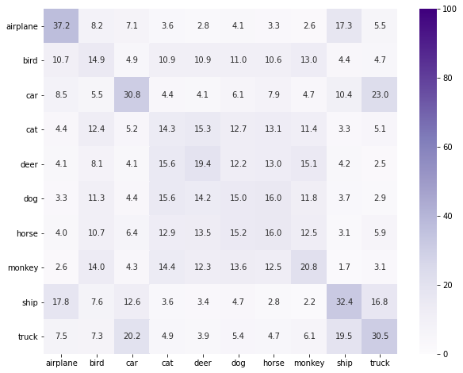
BoW Classifier on 2 class and 10 class problems with STL-10
While the accuracy isn't anything to write home about, you do see some classification effectiveness as well as where confusion / misclassification persists. Animals tend to be confused with one another whereas vehicles tend to be confused with one another.
Moving on from traditional methods, I explored a simple CNN that utlizes convolutional layers, batch normalization, and max pooling. Thre networks in constructed of three passes through this architecture before being connected to a dense or fully-connected layer and onto the output classes. These progress through 3 (input RGB), 6 (conv-layer), 12 (conv-layer), and 24 (conv-layer) channels, to 64 (dense-layer) nodes, to the final class outputs. Gradients are calculated using cross-entropy loss. Below are the results on the test set images.
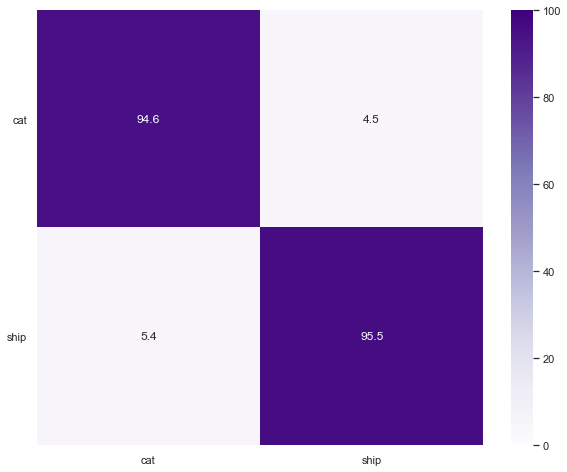
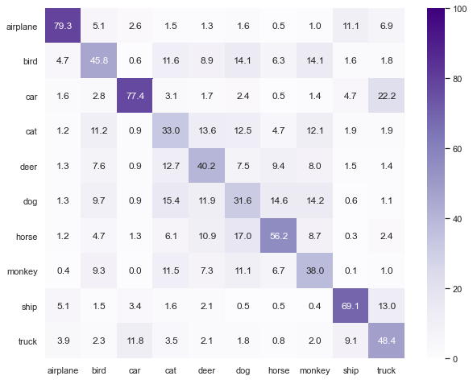
CNN Classifier on 2 class and 10 class problems with STL-10
We see significant improvement over the hand-craft features already and a similar confusion correlation amongst animals and vehicles. However, there is an issue with the classification that becomes readily apparent in the accuracy graphs throughout training.
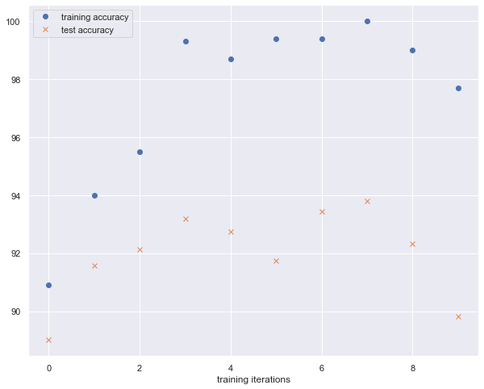
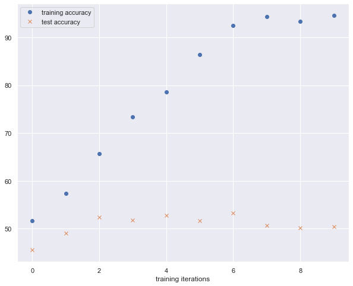
CNN training accuracy on 2 class and 10 class problems with STL-10
There is significant overfitting in the data that leads to excellent accuracy in the training set, but not generalized accuracy in the test set. There are a number of potential methods to explore including:
- More training data (if available)
- Parameter reduction
- Ridge or lasso regularization (weight decay)
- Dropout
I used the third and fourth option, regularization and dropout, to help with the overfitting problems seen in the first network. We add 4 dropout layers into the network as well as L2 regularizer. Below shows the results of the newly trained classifier.
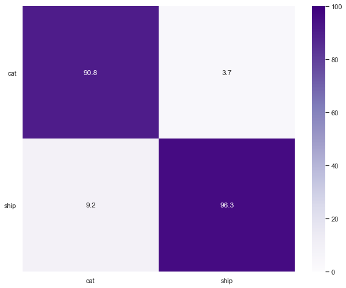
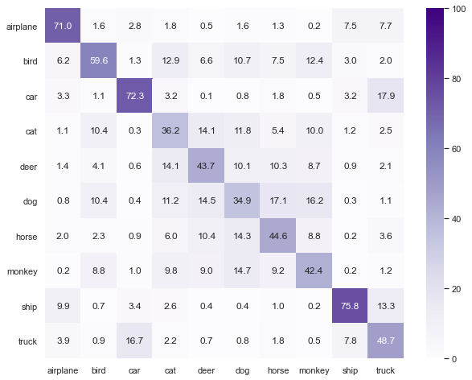
Regularized CNN Classifier on 2 class and 10 class problems with STL-10
We see quite similar performance even after just 10 training epochs on the test image sets. Let's look at the accuracy plots throughout training with the regularizers in place!
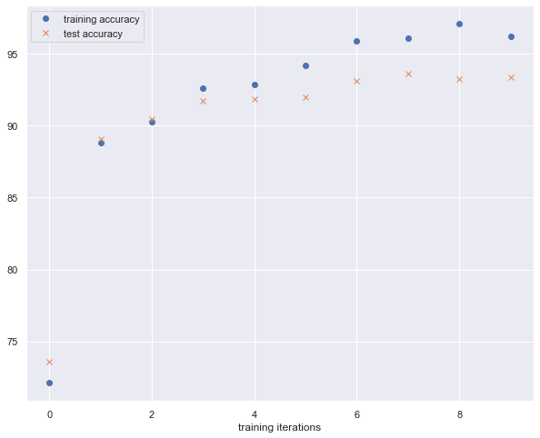
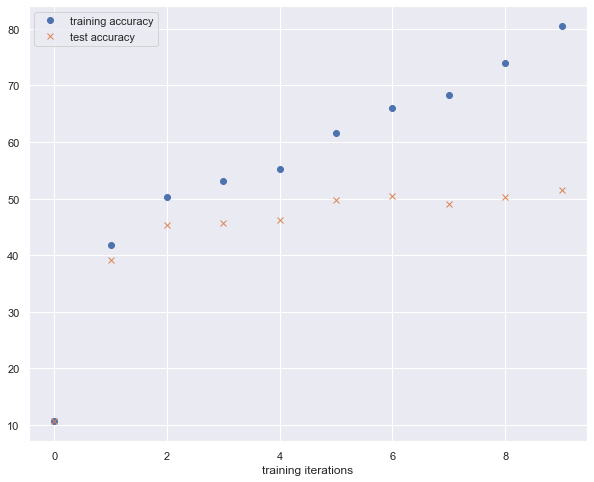
Regularized CNN training accuracy on 2 class and 10 class problems with STL-10
We still see quite a bit of overfitting, but signficantly improved compared to the previous network wihch rapidly began to overfit. In general, you would like to be able to get far more labelled images for training to help fine-tune the network as a first objective. These regularization methods, however, can be useful when you're data limited.
Stereo Vision
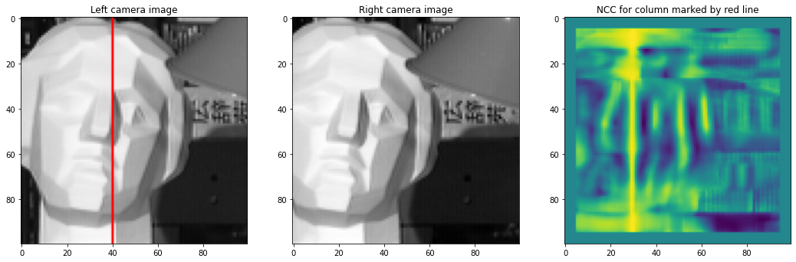
Normalized cross-correlation of stereo image, rightmost image showing where on the left the scan line is most similar
Image Analysis and Computer Vision Exercise #2
stereo vision correlation point cloud reconstruction
Stero imaging is a powerful tool that allows for acquisition of 3-dimensional context of properties such as depth or texture. This exercise looks at two stereo set-ups and goes through the process of normalized cross-correlation, triangulation, and point cloud reconstruction.
With the two sets of stereo images, you can construct a 3D point cloud of the setting. For example, the below image shows the original captured stereo images.
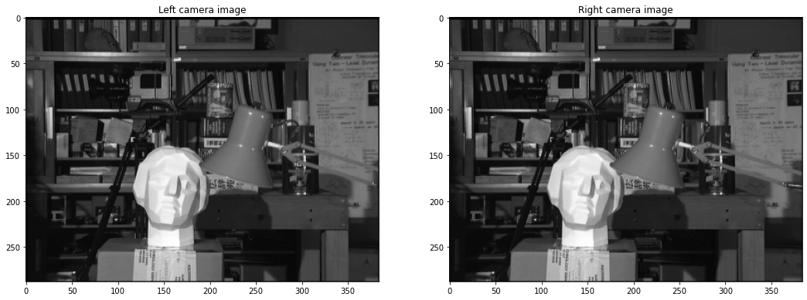
Original Tsukasa stereo images
Which can then be reconstructed into the following 3D point cloud.
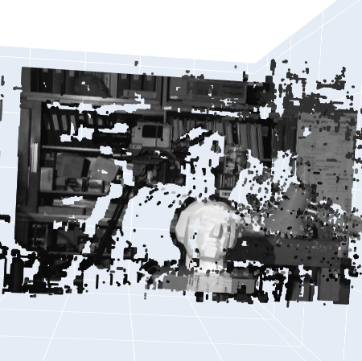
Tsukasa 3D point cloud reconstruction
On images where there are less features to match corresponding patches, the results are typically much noisier and worse. If we take the following stereo images of cubes:
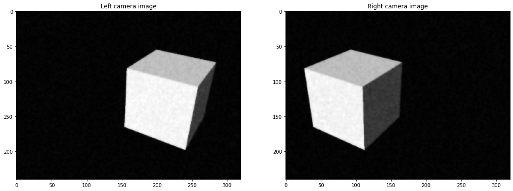
Feature-limited cube stereo images
We reconstruct a highly noisy point cloud where most of the darker parts of the image have uniform cross-correlation and poor feature localization in 3D space.
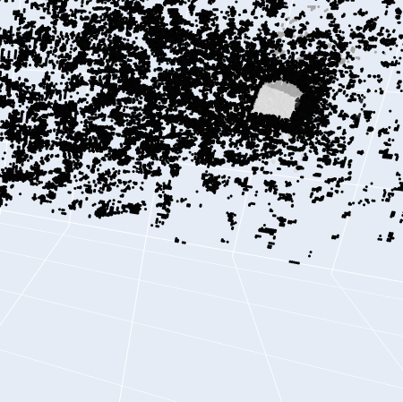
Noisy cube 3D point cloud reconstruction
With a broad range of applications in 3D vision, stereo imaging and reconstruction form one of most basic and fundamental tools in image analysis.
Harris Corner & Canny Edge Detection
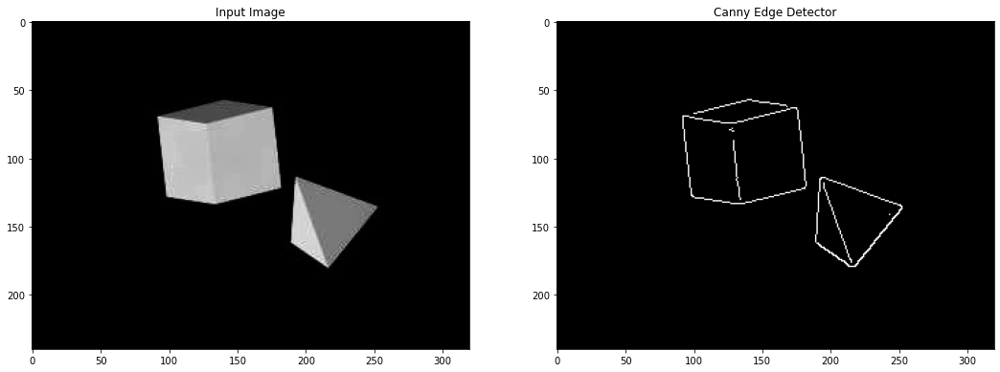
Canny edge acting on a noisy image of a cube
Image Analysis and Computer Vision Exercise #1
feature extraction harris corner canny edge
In image analysis, the construction of features allows for more complicated models for perception and object recognition. Two of the most basic features are corners and edges, characterized by strong gradients and feature transitions.
The Harris Corner detection utilizes the partial derivatives (found via convolution with Sobel masks), further smoothing, and the construction of an auto-correlation matrix to determine a "Harris Response." This Harris Response is a measure of "corneriness" with negative values representing edges, neutral values representing homogenous areas, and positive values representing corners.
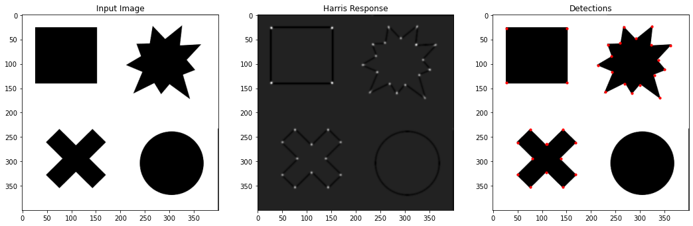
Harris Response and corner identification for simple geometries
To create clear edge boundaries on the other hand, we can use Canny Edge detection.
This detection method calculates the partial derivatives (again using Sobel masks), and then determines the gradient magnitude and the gradient direction. The gradient magnitude can be thought of as a measure of edginess with larger values corresponding to sharp image transitions and edges. The direction is important in synthesizing and refining the edge properties (such as thickness).
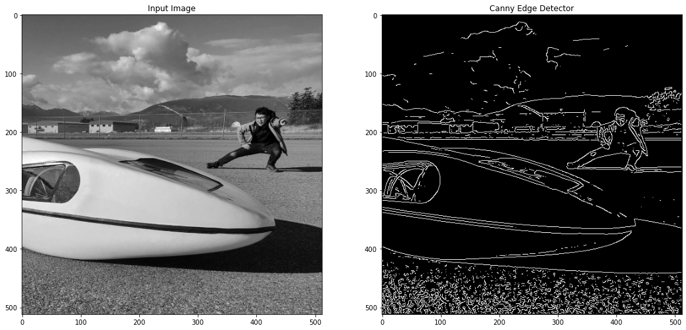
Canny Edge detection on an image of UBC Supermileage Mark XIV at Pitt Meadows, BC
151-0563
Policy Iteration, Value Iteration, and Linear Programming
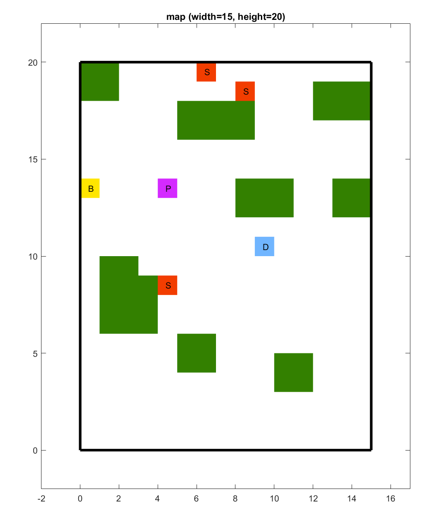
Top-down view of a generated world. The purple cell represents the pick-up station, the yellow cell the base station, the blue cell the delivery station, the green cells the trees, and the red cells the angry residents.
Dynamic Programming and Optimal Control Exercise
Bellman equation policy iteration value iteration linear programming
The goal of this programming exercise is to deliver a package with a drone as quickly as possible. To achieve this, the drone must first fly to a pick-up station to collect a package and then reach a delivery station to discharge it. Along the way, the drone must avoid hazards such as trees or angry residents who try to shoot it down.
The drone has 5 possible actions it can perform: hover, north, west, south, east. In this scenario, there is also some probability of wind which, after performing an action, will stochastically move you from one location to an adjacent location. The cost of each action is 1, but, if the drone crashes, the recovery process has a cost of 10. Crashes are caused by the wind blowing the drone into the trees / borders or if an angry resident shoots down the drone. These parameters let us determine the probability transition matrix and the stage cost matrix for the problem for the construction of a Bellman equation. This Bellman Equation than can be solved for the optimal cost and the associate optimal policy.
Below shows the the results of the three methods. The colour represents the found optimal cost, while the arrows represent the optimal control input. We see that the optimal costs are the same for each method, but the methods from different optimal policies. The Bellman Equation guarantees a unique optimal cost, but not a unique optimal policy.
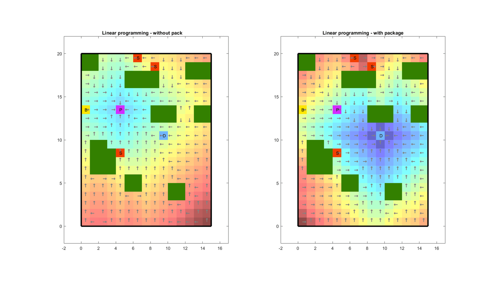
Resulting cost-to-go and policy maps for the drone delivery problem
To solve the Bellman Equation, the exercise requires us to use three approaches. The first approach is value iteration, as seen in the equation below.
$$ V_{l+1}(i) = \min_{u \in U(i)} \left( q(i,u) + \sum_{j=1}^{n}P_{ij}(u)V_l (j) \right), \qquad \forall i \in S^+ $$
This iterative equation converges to the optimal cost J* after an infinite iterations. In this implementation, we set a threshold at 1e-16, roughly the precision in MATLAB, as close enough to the optimal result and to terminate the recursion.
$$ ||V_{l+1}(i)-V_{l}(i)|| < 10^{-16}$$
The second method uses policy iteration. Policy iteration is a two-step process that goes through (1) value update and (2) policy improvement. The first step solves a system of linear equations to get the evaluated cost-to-go whereas the second process uses the cost-to-go to determine what the best policy would be. The value update can be described by the equation:
$$ J_{\mu^h}(i) = q(i,\mu^h (i)) + \sum_{j=1}^{n}P_{ij}(\mu^h (i))J_{\mu^h} (j), \qquad \forall i \in S^+ $$
And the policy improvement equation:
$$ \mu^{h+1}(i) = \operatorname*{argmin}_{u \in U(i)}\left( q(i,u) + \sum_{j=1}^{n}P_{ij}(u)J_{\mu^h} (j) \right), \qquad \forall i \in S^+ $$
For the first step, the value update, we can express the equation in matrix form, which is easily solvable in MATLAB:
$$ J=G+PJ \rightarrow J = (I=P)^{-1}G$$
Finally, the last method to solve the Bellman Equation is through linear programming, which utlizes constraints and optimization. The formulation for linear programming is as follows:
$$ \begin{align} \text{Maximize} \qquad & c^T x \\ \text{subject to} \qquad & Ax \leq b \\ \text{and} \qquad & x \geq 0 \\ \end{align} $$
Where x is the vector of variables (to be determined), c and b are vectors of known coefficients and A is a matrix of known coefficients.